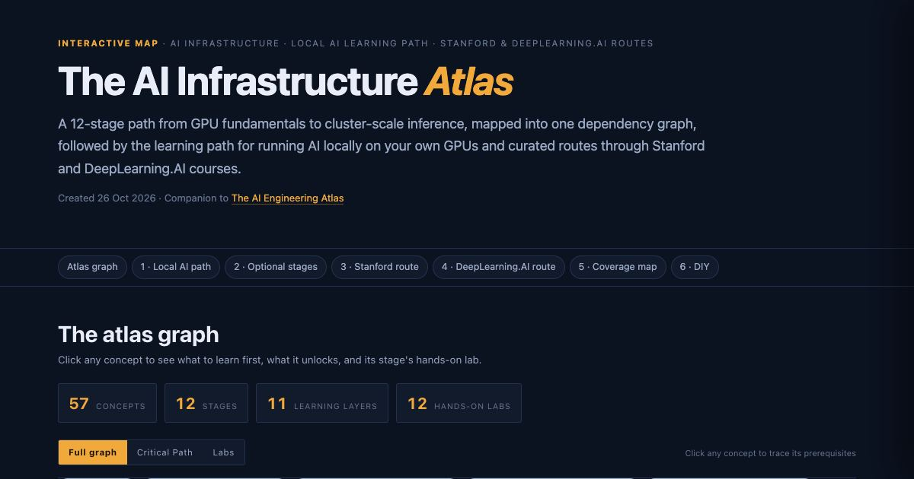
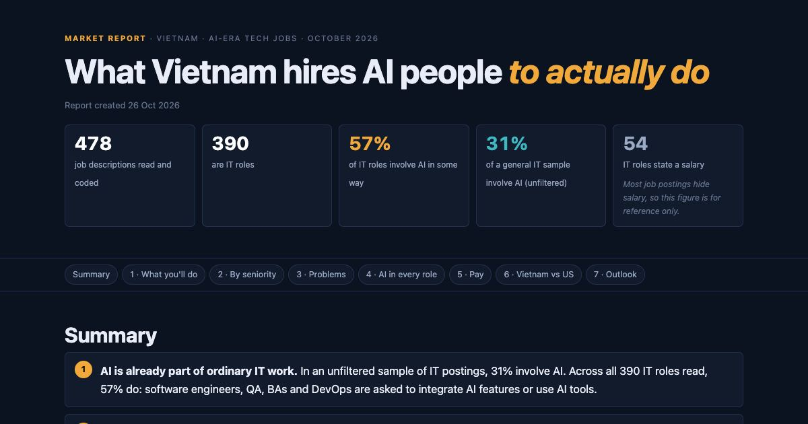
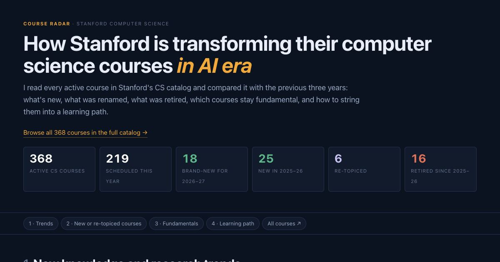
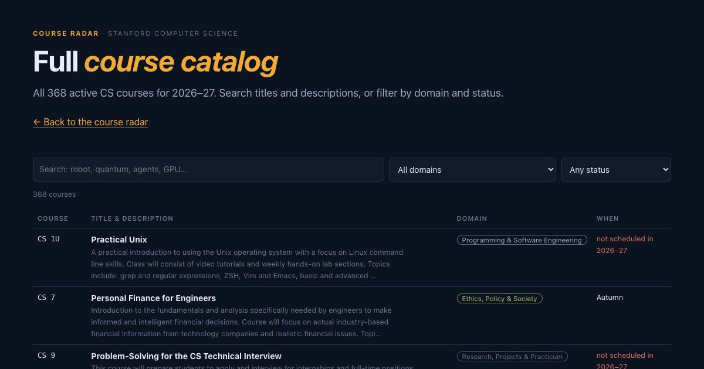
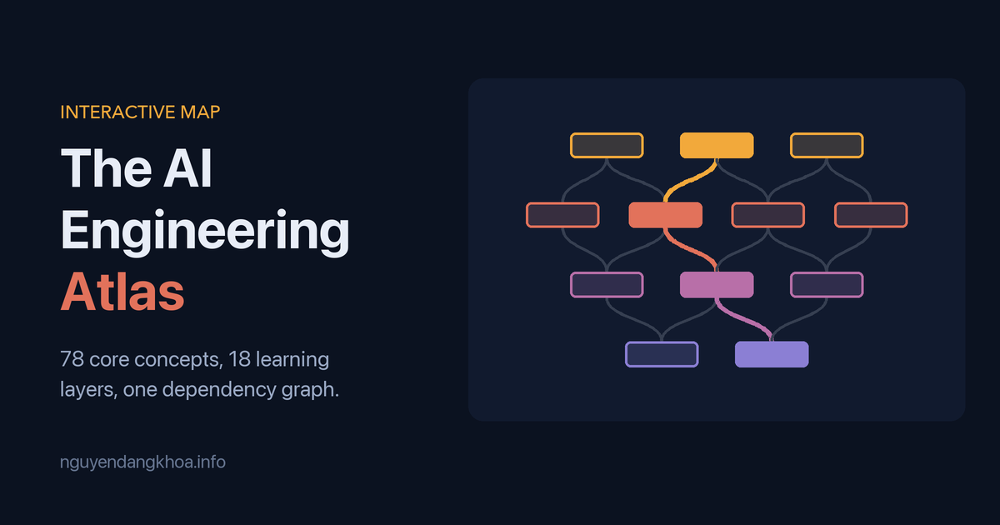

Using AI to Learn AI
Interactive maps, course radars and market reports I build with AI while learning AI engineering. Each one is a working study tool, published in case it helps you too.
5 pages, newest first

Interactive map ·
The AI Infrastructure Atlas
A 12-stage dependency graph from GPU fundamentals to cluster-scale inference, the learning path for running open models on your own GPUs, course routes through Stanford and DeepLearning.AI, and 14 hands-on labs.
Explore the Atlas
Market report ·
What Vietnam Hires AI People to Do
Job descriptions from three Vietnamese job sites, read and coded: what employers expect AI-era engineers to do, which business problems they pay to solve, and what it pays.
Read the report
Course radar ·
How Stanford Is Transforming CS in the AI Era
What Stanford's CS department added, renamed and retired for 2026–27, what that says about where AI is heading, the fundamentals to learn first, and curated learning paths.
Read the radar
Course catalog ·
Stanford CS Full Courses 2026–27
Every active Stanford Computer Science course for 2026–27, searchable by title, description, domain and status. The companion catalog to the course radar.
Search the catalog
Interactive map ·
The AI Engineering Atlas
78 core AI engineering concepts, deduplicated from a 20-phase curriculum and wired into one dependency graph. Click any concept to see what to learn first and what it unlocks.
Explore the Atlas